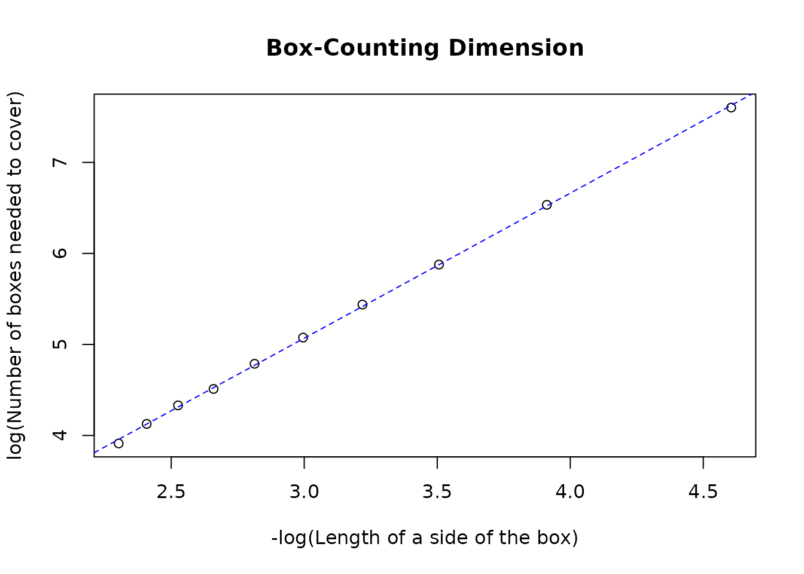

Box-Counting dimension of point datasets
Pramit Ghosh
2020-05-12
Source:vignettes/points.Rmd
points.RmdOverview
This vignette illustrates the use of this package for calculating the Box-Counting Dimension of point features such as those sf objects with geometry type MULTIPOINT.
For
sfobjects with geometry typePOINT, a Box-Counting dimension cannot be calculated and is (trivially) equal to 0.
Examples
In the following examples, the Box-Counting Dimension will be calculated for both arbitrary MULTIPOINT features with theoretically known fractal dimensions as well as for real-world datasets.
# Loading pre-requisite packages library(sf) #> Linking to GEOS 3.7.2, GDAL 2.4.2, PROJ 5.2.0 library(sameSVD)
Features with known Box-Counting dimensions
MULTIPOINT feature with 2 points
two_points = st_sf(st_sfc(c(st_point(c(1, 2)), st_point(c(3, 4))), crs = 3857)) two_points #> Simple feature collection with 1 feature and 0 fields #> geometry type: MULTIPOINT #> dimension: XY #> bbox: xmin: 1 ymin: 2 xmax: 3 ymax: 4 #> CRS: EPSG:3857 #> st_sfc.c.st_point.c.1..2....st_point.c.3..4.....crs...3857. #> 1 MULTIPOINT ((1 2), (3 4))
two_points has the following class memberships
class(two_points) #> [1] "sf" "data.frame"
plot(st_geometry(two_points), axes = TRUE)

The Box-Counting dimension of this simple feature can be calculated as follows
bcd(two_points, l = seq(0.1, 1, 0.1), plot = TRUE) #> Generating grids... #> Counting intersecting cells... #> Performing simple linear regression to determine Box-Counting dimension... #> Plotting requested...

#> Plotting best-fit line...
#> [1] 0The linear regression gives a perfectly horizontal best-fit line indicating a Box-Counting dimension of 0, as expected.
Sierpiński triangle
The Sierpiński triangle is an extensively studied fractal with a theoretically known fractal (Hausdorff) dimension of \(log_2(3) = 1.5850\). In this example, a Sierpiński triangle will be generated using a randomized algorithm and its Box-Counting Dimension will be calculated. The following figure shows how the randomized algorithm works and creates the said fractal using discrete points.

By Ederporto - Own work, CC BY-SA 4.0, Link
# Methods to generate a Sierpiński triange new_points = function(points, last_point, last_vertex = NA) { pt_row = sample(1:dim(points)[1], 1) if(!is.na(last_vertex)) { while(pt_row == last_vertex) pt_row = sample(1:dim(points)[1], 1) } mid_pt = c((last_point[1] + points[pt_row, 1])/2, (last_point[2] + points[pt_row, 2])/2) list(matrix(mid_pt, nrow = 1), pt_row) }
The Sierpiński triangle is generated as follows.
# Define initial variables n = 3 #Create a 3-sided polygon (triangle) points = matrix(data = c(c(0,0), c(1,0), c(cos(pi/3), sin(pi/3))), ncol = 2, byrow = TRUE, dimnames = list(LETTERS[1:n], c("x", "y"))) #Define vertices of triangle last_pt = matrix(data = c(0,0), nrow = 1) #Choose a random starting point max_pts = 20000 # Generate coordinates sierpinski = list() length(sierpinski) = max_pts for(i in 1:max_pts){ last_pt = new_points(points, last_pt)[[1]] sierpinski[[i]] = last_pt } sierpinski_pts = matrix(unlist(sierpinski), ncol = 2, byrow = TRUE)
The generated Sierpiński triangle is converted to a sf MULTIPOINT object with a CRS EPSG:3857.
(sierpinski_sf = st_sf(st_sfc(st_multipoint(sierpinski_pts), crs = 3857))) #> Simple feature collection with 1 feature and 0 fields #> geometry type: MULTIPOINT #> dimension: XY #> bbox: xmin: 0.002162498 ymin: 2.734709e-07 xmax: 0.9983608 ymax: 0.8601136 #> CRS: EPSG:3857 #> st_sfc.st_multipoint.sierpinski_pts...crs...3857. #> 1 MULTIPOINT ((0.25 0.4330127... plot(sierpinski_sf, axes = TRUE)
The Box-Counting Dimension of this figure is calculated using bcd() as illustrated below.
bcd(sierpinski_sf, l = seq(0.01, 0.1, 0.01), plot = TRUE) #> Generating grids... #> Counting intersecting cells... #> Performing simple linear regression to determine Box-Counting dimension... #> Plotting requested...

#> Plotting best-fit line...
#> [1] 1.599228The regression gives a Box-Counting dimension of ~1.59 which is very close to the theoretical value.